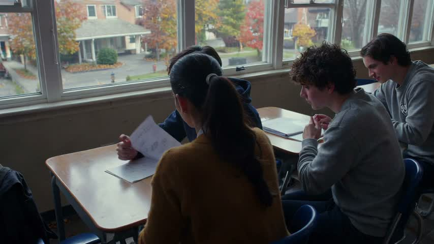
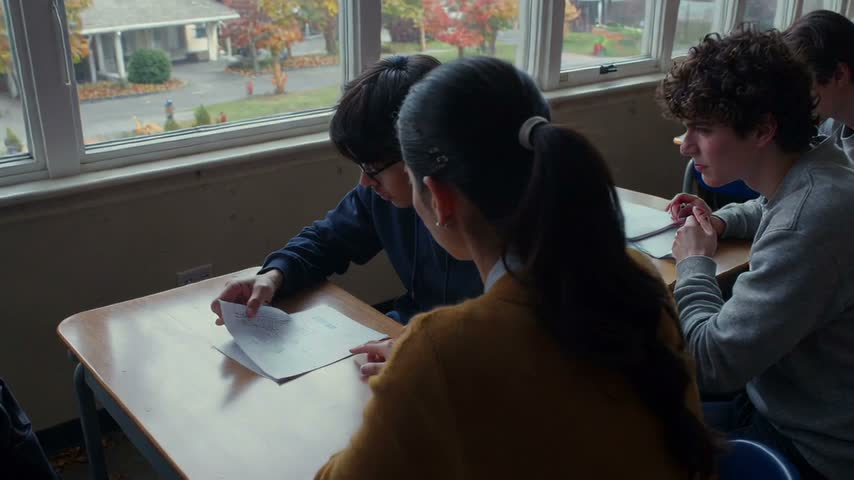
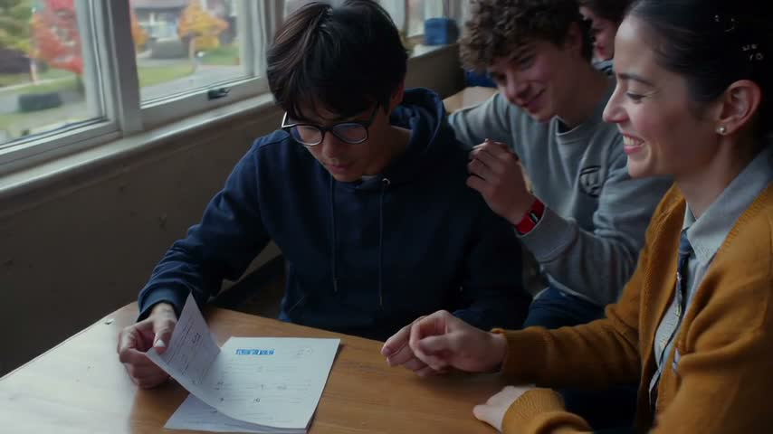
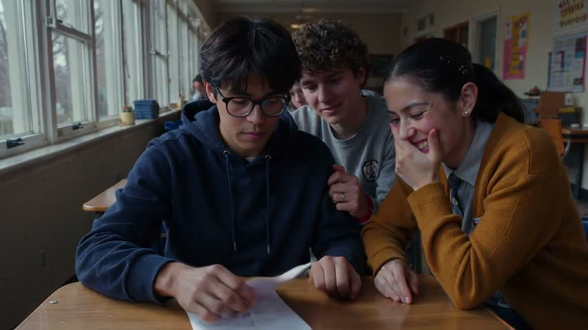
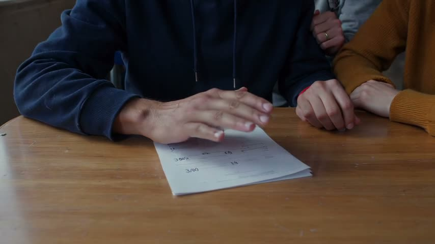
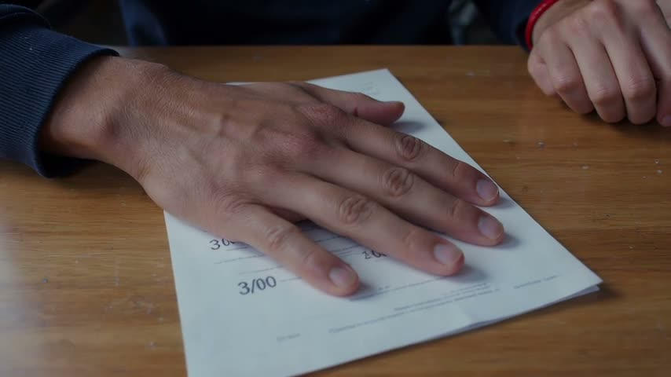
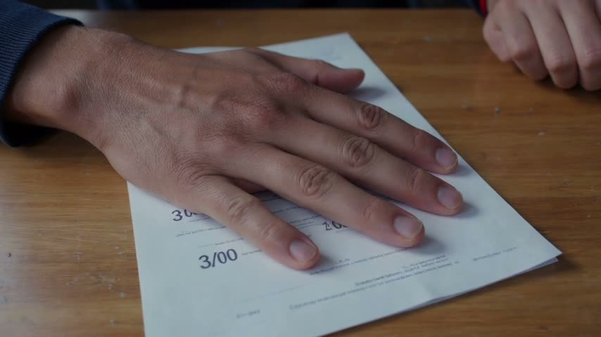

The second-floor classroom has cream walls, east windows facing a paved courtyard, and desks in rows. Begin in a medium shot of Evan beside the windows. Evan has short black hair, a navy hoodie, and round glasses. He turns over his returned test. Cut close: “38/100” is clear; other marks are indistinct. Maya has a dark ponytail, a mustard cardigan, and silver stud earrings. Leo has curly brown hair, a gray sweatshirt, and a red wristband. Maya leans over and points at the score. Leo looks, smirks, and nudges Maya; she covers a mocking grin. Evan lowers his eyes and pulls the paper toward himself. End close on his hand covering the score.
| kind | fiction |
| people | evan: Evan has short black hair, a navy hoodie, and round glasses.; maya: Maya has a dark ponytail, a mustard cardigan, and silver stud earrings.; leo: Leo has curly brown hair, a gray sweatshirt, and a red wristband. |
| place · time · mood | The second-floor classroom has cream walls, east windows facing a paved courtyard, and desks in rows. · · |
| exact words | 38/100 |
| seconds · aspect · sound | 15 s · 16:9 · none (from the story) |
| progression | |
| specific · first frame | none · none |
raw
{
"prose": "The second-floor classroom has cream walls, east windows facing a paved courtyard, and desks in rows. Begin in a medium shot of Evan beside the windows. Evan has short black hair, a navy hoodie, and round glasses. He turns over his returned test. Cut close: “38/100” is clear; other marks are indistinct. Maya has a dark ponytail, a mustard cardigan, and silver stud earrings. Leo has curly brown hair, a gray sweatshirt, and a red wristband. Maya leans over and points at the score. Leo looks, smirks, and nudges Maya; she covers a mocking grin. Evan lowers his eyes and pulls the paper toward himself. End close on his hand covering the score.",
"kind": "fiction",
"people": [
"evan: Evan has short black hair, a navy hoodie, and round glasses.",
"maya: Maya has a dark ponytail, a mustard cardigan, and silver stud earrings.",
"leo: Leo has curly brown hair, a gray sweatshirt, and a red wristband."
],
"place": "The second-floor classroom has cream walls, east windows facing a paved courtyard, and desks in rows.",
"time": "",
"mood": "",
"exact_words": [
"38/100"
],
"seconds": 15,
"aspect": "16:9",
"sound": "none",
"sound_why": "from the story",
"progression": [],
"specific": [],
"first_frame": "",
"carried": [
"evan: Evan has short black hair, a navy hoodie, and round glasses.",
"maya: Maya has a dark ponytail, a mustard cardigan, and silver stud earrings.",
"leo: Leo has curly brown hair, a gray sweatshirt, and a red wristband."
],
"needs_research": false,
"research_why": "",
"seconds_why": ""
}1707 characters (limit 2,000) · 5 beats · 5 shots · code check: length yes exact words yes
FORMATCreate a 15-second silent naturalistic drama about Evan’s returned test in a present-day suburban school classroom, widescreen 16:9. LOOKCool autumn morning light, realistic textures, restrained contrast and quiet social tension. CONTINUITYFive coherent shots maintain the same students, clothing, paper and neighboring desks throughout. BEAT 10–3 seconds: medium shot of Evan, short black hair, navy hoodie and round glasses, turning over his returned test beside the east windows; cream walls and rows of desks frame the second-floor classroom, with a paved courtyard below; slowly push in. BEAT 23–6 seconds: close shot of the paper as Maya, already leaning beside Evan, points at the clearly legible score, exactly '38/100'; all other marks are indistinct; her dark ponytail, mustard cardigan and silver stud earrings remain visible at the upper edge, morning light crossing the desktop; slide gently sideways. BEAT 36–9 seconds: medium three-shot of Leo, curly brown hair, gray sweatshirt and red wristband, nudging Maya while smirking toward the test; Maya’s hand conceals a mocking grin, Evan’s eyes are downcast, and the corridor beyond the classroom door is dim; make a restrained lateral move. BEAT 49–12 seconds: tight shot of Evan’s hand pulling the paper toward himself across the sunlit wooden desktop; his palm rests over the score by the end, fully concealing it; ease closer. BEAT 512–15 seconds: final close-up of Evan’s motionless hand covering the score, the paper against his navy cuff on the desktop; finish the push and settle into a still hold for the final two seconds. Softly muted grade, measured pacing without a dramatic color shift. No subtitles, text overlays or additional scenes; clip 1 of 3 ends on the covered score.
beats as the writer listed them
| # | range | shows |
|---|---|---|
| 1 | 0–3 s | Evan turns over his returned test beside the classroom windows. |
| 2 | 3–6 s | Maya points at the clearly visible score, 38/100. |
| 3 | 6–9 s | Smirking Leo nudges Maya; her hand conceals a mocking grin. |
| 4 | 9–12 s | Evan pulls the paper inward, his palm concealing the score. |
| 5 | 12–15 s | Still close-up of Evan’s hand covering the score. |
The MCP has not been run on this brief.
guide.md as given to the writer
# The operational prompt (text-to-video)
The Magic Hour guide says: specify the subject, one action, camera move, framing and mood; request only audio and
duration the model supports; then review the actual result. The prompt that works is ONE prose paragraph, under 2,000
characters, in this order:
1. FORMAT: the duration, the kind of piece, the subject, the aspect, in one sentence.
"Create a 16-second cinematic advertisement for Petal & Stem, a small neighbourhood flower shop. Widescreen 16:9."
2. LOOK: medium, light, mood, the texture of the world, in one sentence. For action, the look line also carries the
ENERGY in plain words ("tight, fast-paced editing, roaring engines, cars accelerating hard, streetlights streaking
past"): the model renders the pace it is told, and a race described calmly comes out slow.
"Photorealistic, intimate, warm natural dawn sunlight, soft golden highlights, authentic lived-in neighbourhood."
3. CONTINUITY: how many shots, and what stays the same across them, in one sentence.
"Four coherent shots with natural edits, same florist, shop and bouquet throughout."
4. BEATS: timed ranges that together cover the whole duration, in order. Each beat, in this order: the time range,
the framing, the subject with one identifying detail, ONE action, one environment detail, the camera or lens.
"0–4 seconds: exterior medium-wide shot at dawn, an adult florist in a sage-green apron unlocks and opens the
wood-and-glass shop door, warm sunlight on the flower buckets beside the entrance."
One action per beat. Never two things happening. Never a thing that must appear later mentioned early.
The request's own verbs are the beats' actions and each gets its own beat: "arranges a bouquet" is a beat of hands
placing stems, and wrapping is a different action; do not merge two of the request's actions into one beat.
When possession changes, the beat ends with the new state stated plainly: "the customer now holds the bouquet, the
florist's hands are empty".
The last beat is a separate establishing shot with no new action: the place alone, or the people standing still.
Every beat has a camera MOVE (push, slow orbit, lateral slide, ease back, handheld follow), never "stationary" or
"locked-off" except the final hold. Name the key object concretely once (blush pink roses, cream flowers, brown
kraft paper), not "a bouquet"; the model renders nouns it is given.
A beat is 3–6 seconds, so a 16-second clip has 3–5 beats and a 30-second clip 5–8. Two-second beats make a
cut every two seconds, which the model renders as a jumble; the shot count in CONTINUITY equals the beat count.
5. EXACT WORDS: any lettering the video must show, quoted once, inside the beat where it is seen.
"clear tasteful shop sign reads exactly 'Petal & Stem'."
6. SOUND (only when audio is on): ambient, or the character of music, or the spoken lines quoted with their time
range and who speaks. Narration and dialogue are the expensive part of the budget; keep them short.
7. HOLD: the last beat ends on a still, readable image. "Hold on the storefront for the final two seconds."
8. GRADE: colour treatment and pacing, one short sentence. "Gentle cinematic colour grade, calm uplifting pacing."
9. NEGATIVES: one line, last, only what the model would otherwise add. "No voiceover, no subtitles, no text overlays."
Quality words are descriptive, never technical: cinematic, photorealistic, shallow depth of field, natural hands and
anatomically correct movement, realistic textures. No resolution words, no "8k", no seeds, no camera brands.
Never: shot-list headings, a separate negatives block, a constraint on every sentence, "do not show X" for things that
appear later, repeating a sentence, a sign mentioned in a beat where it must not be seen.
Budget: about 450 characters go to format, look, continuity, hold, grade and negatives. The rest is beats, about 200
characters each. Compress the story into the beats; do not paste it.
# Image-to-video (a start frame is supplied)
Same slots, same order, two changes:
- FORMAT shrinks to the duration and "matching the source image" (the aspect is the image's).
- LOOK becomes PRESERVE: name what the image already fixes and must stay: "Preserve the woman's face, dark hair in a
low bun and cream jacket, and the bouquet of yellow, magenta, cream and red flowers in pale paper, exactly as in the
image; keep the morning light and the doorway."
- The first beat describes the image as it is and the first motion out of it, so the model continues the picture
instead of cutting away. Later beats may cut, with the continuity sentence naming the same people and the bouquet by
the same words every time.
# When people carry the scene (a handoff, a conversation, a reunion)
The MCP's scene 2 clip read as more alive than ours with the same still route. The differences were in the prompt:
- ONE continuous shot with a very slow push in, not five cuts in 16 seconds. On image-to-video every cut abandons the
start frame; one shot keeps the faces and lets a performance develop.
- Performance verbs and eye lines in every beat: "exchanging warm eye contact", "he smiles warmly and reaches out with
both hands", "they exchange affectionate smiles", "she steps close beside him". Behaviour, not inventory.
- A physically ordered action: "only after he has a firm grip does she release it".
- PRESERVE is three anchors per person (hair, one garment, one detail) and one line for the object, said once. The
identity is in the start frame; a 600-character inventory repeated in every beat buys nothing and starves the beats.
- End on the faces: "a stable medium two-shot showing both faces and the bouquet, hold three seconds", not a wide
establishing shot of people standing still.
- Framing: the seed still should be a medium shot where faces are large enough to act; a medium-wide doorway reads
as staging.
# A sequence inside a film (case 2)
- Say the PLACE first and relationally: "inside the Resolute's bridge: narrow steel interior, slanted front windows
overlooking a cold grey ocean". Never list the ship's exterior or the sea as things to preserve in an interior clip;
the model will build them. Only the bible entries that appear in this clip go in.
- People from a start frame get their positions: "Vale at left, the lookout in the centre, the helmsman at right".
- A distant thing gets its scale and where it is seen: "a tiny silhouette on the horizon through the windows".
- Lines are short and distinct, one per beat ("Enemy cruiser on the horizon!" … "Fire!"), never one line for the
whole clip; with audio on, a single quoted line is repeated by the model.
- The last sentence states the clip's place in the film: "clip 1 of 3: end on the order; no guns firing, that is the
next clip".
| call | text-to-video · model ltx-2.5 · 15 s · 16:9 · 480p · audio off · references none |
| credits · time | 360 credits · 40 s wall · rendered 15 s |
| prompt sent | the operational prompt above, unchanged |
frames: first, each beat's middle, last


| beat | subject present | action seen | evidence |
|---|---|---|---|
| 1 | yes | yes | Evan lifts and turns a sheet at his desk beside the classroom windows. |
| 2 | yes | no | Maya points at the paper, but no clearly readable 38/100 is visible. |
| 3 | yes | no | Leo smiles, but a nudge toward Maya is not evident; Maya's grin is uncovered. |
| 4 | yes | no | Evan touches the paper with bent fingers; his palm does not conceal the score. |
| 5 | yes | no | Close-up shows Evan's hand on the sheet, but score-like lettering remains exposed below his fingertips. |
| exact words | '38/100' reads “Visible characters appear to read '3', '8', '5', '/'; the remainder is obscured or illegible.” no |
| same people and place | no |
| last frame holds | unclear |
| artifacts | The score is malformed, appearing as '385/' rather than '38/100'.; Other test lettering is faint and garbled.; The opening separate-desk arrangement changes to three students sharing a tabletop, with apparent wardrobe and supporting-character continuity changes. |
| failures | beat 2 (3–6 s) must visibly show the action: Maya points at the clearly visible score, 38/100. (seen instead: Maya points at the paper, but no clearly readable 38/100 is visible.); beat 3 (6–9 s) must visibly show the action: Smirking Leo nudges Maya; her hand conceals a mocking grin. (seen instead: Leo smiles, but a nudge toward Maya is not evident; Maya's grin is uncovered.); beat 4 (9–12 s) must visibly show the action: Evan pulls the paper inward, his palm concealing the score. (seen instead: Evan touches the paper with bent fingers; his palm does not conceal the score.); beat 5 (12–15 s) must visibly show the action: Still close-up of Evan’s hand covering the score. (seen instead: Close-up shows Evan's hand on the sheet, but score-like lettering remains exposed below his fingertips.); the lettering must read exactly '38/100' (it read "Visible characters appear to read '3', '8', '5', '/'; the remainder is obscured or illegible."); the same people and place in every shot |
| call | text-to-video · model ltx-2.5 · 15 s · 16:9 · 480p · audio off · references none |
| credits · time | 360 credits · 38 s wall · rendered 15 s |
| failures folded in | beat 2 (3–6 s) must visibly show the action: Maya points at the clearly visible score, 38/100. (seen instead: Maya points at the paper, but no clearly readable 38/100 is visible.); beat 3 (6–9 s) must visibly show the action: Smirking Leo nudges Maya; her hand conceals a mocking grin. (seen instead: Leo smiles, but a nudge toward Maya is not evident; Maya's grin is uncovered.); beat 4 (9–12 s) must visibly show the action: Evan pulls the paper inward, his palm concealing the score. (seen instead: Evan touches the paper with bent fingers; his palm does not conceal the score.); beat 5 (12–15 s) must visibly show the action: Still close-up of Evan’s hand covering the score. (seen instead: Close-up shows Evan's hand on the sheet, but score-like lettering remains exposed below his fingertips.); the lettering must read exactly '38/100' (it read "Visible characters appear to read '3', '8', '5', '/'; the remainder is obscured or illegible."); the same people and place in every shot |
| prompt sent | Create a 15-second silent naturalistic drama about Evan’s returned test in a present-day suburban school classroom, widescreen 16:9. Cool autumn morning light, realistic textures, restrained contrast and quiet social tension. Five coherent shots keep the same students, clothing, paper, neighboring desks and classroom throughout. 0–3 seconds: medium shot of Evan, short black hair, navy hoodie and round glasses, turning over his returned test beside the east windows; cream walls and desk rows frame the second-floor classroom, paved courtyard below; slowly push in. 3–6 seconds: close shot as Maya, leaning beside Evan, visibly points beside the fully exposed, sharply readable score, exactly '38/100', holding her fingertip clear of every character; all other marks are indistinct. Her dark ponytail, mustard cardigan and silver studs remain visible at the upper edge, morning light crossing the desktop; slide gently sideways. 6–9 seconds: medium three-shot of Leo, curly brown hair, gray sweatshirt and red wristband, visibly nudging Maya’s upper arm with his elbow, shifting her slightly, while smirking toward the test; Maya’s raised hand covers her mouth, concealing her mocking grin. Evan’s eyes are downcast; the corridor beyond the classroom door is dim; make a restrained lateral move. 9–12 seconds: tight shot of Evan pulling the paper inward across the sunlit wooden desktop with his flat palm over the score; his broad palm fully conceals the entire '38/100' by the end; ease closer. 12–15 seconds: final close-up of Evan’s motionless flat hand, palm centered over the entire score area, every character fully hidden beneath his palm, the paper against his navy cuff on the desktop; finish the push and settle into a still hold for the final two seconds. Softly muted grade, measured pacing without a dramatic color shift. No subtitles, text overlays or additional scenes; clip 1 of 3 ends on the covered score. |
frames: first, each beat's middle, last







| beat | subject present | action seen | evidence |
|---|---|---|---|
| 1 | yes | yes | Evan lifts and turns the test beside the classroom windows. |
| 2 | yes | no | Maya smiles with her hand near the paper; no clear pointing or readable 38/100. |
| 3 | yes | no | Maya covers her grin, but smirking Leo touches Evan's arm rather than nudging Maya. |
| 4 | yes | unclear | Evan's palm hovers over the paper; pulling inward and concealing the score are not established. |
| 5 | yes | yes | Close-up shows Evan's hand resting across the central score area; malformed markings remain exposed below. |
| exact words | '38/100' reads “3/00 — visible characters are 3, /, 0, 0; no readable 38/100 appears.” no |
| same people and place | yes |
| last frame holds | yes |
| artifacts | Malformed score-like lettering reads 3/00 instead of 38/100.; Other test lettering is blurred or garbled. |
| failures | beat 2 (3–6 s) must visibly show the action: Maya points at the clearly visible score, 38/100. (seen instead: Maya smiles with her hand near the paper; no clear pointing or readable 38/100.); beat 3 (6–9 s) must visibly show the action: Smirking Leo nudges Maya; her hand conceals a mocking grin. (seen instead: Maya covers her grin, but smirking Leo touches Evan's arm rather than nudging Maya.); the lettering must read exactly '38/100' (it read "3/00 — visible characters are 3, /, 0, 0; no readable 38/100 appears.") |
clip-1.mp4 · review FAIL · state record: evan: Evan has short black hair, a navy hoodie, and round glasses.; maya: Maya has a dark ponytail, a mustard cardigan, and silver stud earrings.; leo: Leo has curly brown hair, a gray sweatshirt, and a red wristband. at The second-floor classroom has cream walls, east windows facing a paved courtyard, and desks in rows., ; words seen: '38/100' → “Visible characters appear to read '3', '8', '5', '/'; the remainder is obscured or illegible.”; last frame frames/clip-1-last.jpgraw
[
{
"clip": "clip-1.mp4",
"seconds": 15,
"people": [
"evan: Evan has short black hair, a navy hoodie, and round glasses.",
"maya: Maya has a dark ponytail, a mustard cardigan, and silver stud earrings.",
"leo: Leo has curly brown hair, a gray sweatshirt, and a red wristband."
],
"place": "The second-floor classroom has cream walls, east windows facing a paved courtyard, and desks in rows.",
"time": "",
"mood": "",
"words_seen": [
{
"text": "38/100",
"exact": false,
"reads": "Visible characters appear to read '3', '8', '5', '/'; the remainder is obscured or illegible."
}
],
"last_frame": "frames/clip-1-last.jpg"
}
]